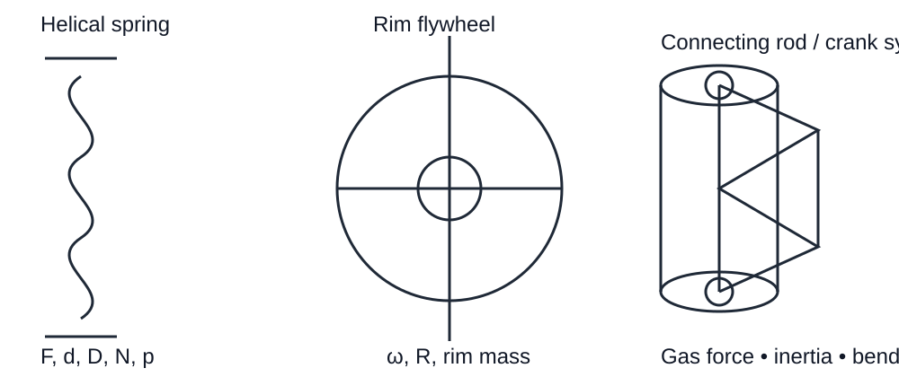

ACADRIX • Anna University R-2021 • Mechanical Engineering
Types of springs; design of helical and concentric springs; surge in springs; laminated springs; rubber springs; flywheels considering stresses in rims and arms for engines and punching machines; solid and rimmed flywheels; connecting rods and crank shafts.
These are the prescribed Unit IV topics in the R-2021 syllabus. The prescribed textbooks are V.B. Bhandari, 4th Edition (2016) and Shigley et al., 10th Edition (2015); PSG Design Data Book is permitted in the examination.

A spring is an elastic member that deflects under load and returns toward its original shape when the load is removed.
Main functions: store/release energy, absorb shock, maintain contact, control motion, control/damp vibration and measure force.
Helical coilSpiralLeafDisc/BellevilleRubber
d = wire diameter; D = mean coil diameter; Do = outside diameter; Di = inside diameter; p = pitch; F = axial load; N = active coils; C = spring index.
Bhandari gives the useful spring-index range as about 4 to 12.
The spring wire carries torsional shear together with direct shear and the curvature effect. The design stress is obtained using the spring stress factor/Wahl factor.
Use consistent units. With N, mm and N/mm², δ is in mm and k is in N/mm.
Solid length depends on the end condition. Free length is the solid length plus the required axial gap and working deflection. Pitch is obtained from the free-length relation and the selected total number of coils.
For the common squared-and-ground end condition, Bhandari gives total coils as active coils + 2.
A compression spring can buckle when it is too slender. Bhandari notes the slenderness/aspect ratio should be checked and gives a critical-load relation using the spring end-condition factor. Always perform the buckling check after selecting the dimensions.
Surge is the oscillatory longitudinal motion of the spring coils caused by dynamic loading. It can produce large alternating stresses and loss of proper spring action. Bhandari gives the natural/surge-frequency relation in terms of spring mass, spring stiffness and end condition. In design, keep the operating frequency sufficiently away from the spring's natural frequency.
For loads Fmax and Fmin:
Calculate mean and alternating shear stresses with the spring stress factor, then use the prescribed fatigue-design relation (modified Soderberg/Wahl fatigue treatment) with the required endurance strength and factor of safety.
Concentric springs are nested springs sharing the same axis. They are useful when a higher load capacity is required within a limited radial space. Load sharing, deflection compatibility and clearance between the springs must be considered.
A laminated spring consists of several leaves assembled together. It is widely used where a large load must be carried while providing elastic deflection.
Important design ideas: load sharing between leaves, bending stress, deflection, number and dimensions of leaves, eye/end construction and fatigue/service conditions.
Use the exact Bhandari/PSG relation corresponding to the leaf arrangement shown in the problem; do not mix equations for full-length and graduated leaves.
Rubber springs store energy through elastic deformation of rubber. Their advantages include compactness, vibration isolation and damping. Their behavior is strongly dependent on geometry, hardness, temperature and loading rate, so the design must use the appropriate prescribed data/relations.
A flywheel stores excess kinetic energy when supply torque exceeds demand and releases it when demand exceeds supply. It reduces speed variation during a cycle but does not regulate the mean speed.
Applications: IC engines, punching presses, pumps and rock crushers.
1. Solid/disk flywheel — mainly for smaller engines. 2. Rim flywheel — heavy rim connected to hub by arms/spokes, commonly used where large energy storage is required.
where ωmean = (ωmax + ωmin)/2.
The required flywheel moment of inertia follows from the maximum fluctuation of energy and the permitted coefficient of speed fluctuation.
Bhandari commonly treats most of the flywheel inertia as being supplied by the rim; approximately 90% of the total flywheel inertia is assigned to the rim when hub/arms contribute the remaining portion.
Once rim mass is found, determine rim dimensions from mass, material density and the selected rim geometry. Check rim speed and stresses.
For a rotating rim, important stresses include centrifugal tensile stress in the rim. Arms/spokes are also checked for the stresses caused by rotation and the torque/load transmission. Use the exact Bhandari equations for the selected solid or rimmed construction.
The connecting rod links the piston to the crankshaft. The small end carries the piston pin; the big end surrounds the crankpin. The rod experiences axial gas load, inertia load and lateral bending/inertia effects.
The inertia force depends on reciprocating mass, crank radius, angular speed and the connecting-rod/crank geometry. The net axial force is obtained by combining gas and inertia forces with the appropriate sign.
The connecting rod is a column in compression. Bhandari uses Rankine's approach and checks the section in the two principal planes. The I-section is preferred because it gives good stiffness with relatively low mass.
Common sections discussed include circular, rectangular and I-sections. The two-plane end conditions differ, so the section should be chosen to provide the required relation between the second moments of area.
The crankshaft converts reciprocating motion into rotary output and transmits torque. It is subjected to bending, torsion and bearing reactions; critical sections must be checked at the crankpin, main journal, web and fillets.
Technical content was checked against the available prescribed Bhandari source, especially Chapter 14 (Springs), Chapter 23 (I.C. Engine Parts) and Chapter 24 (Flywheel). The syllabus scope was checked against the Anna University R-2021 course structure. Shigley was not claimed as a second source where its text was not available in the file library.